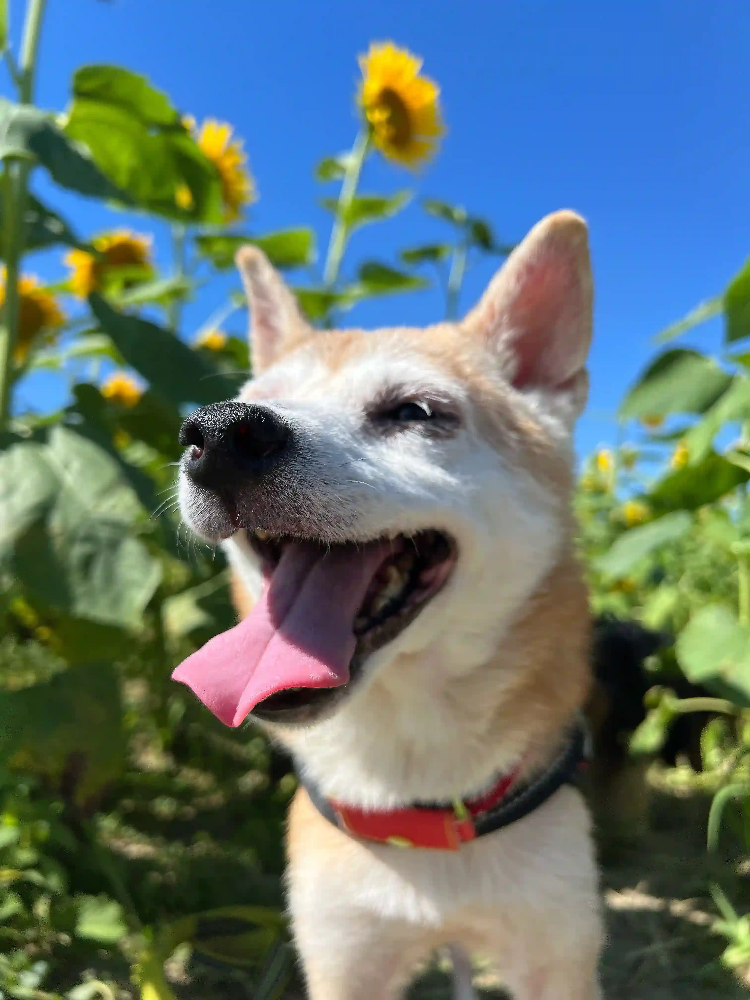

About Me
My Origins & Daily Missions

>Hello, I'm Kotaro.
I grew up alongside a software engineer, developing a keen ear for the rhythm of mechanical keyboards. My career is built on a foundation of "Fast response times (treat-based)" and "Flawless debugging (sock retrieval)."
This portfolio showcases the technical mastery my owner has developed in HTML, CSS, and JavaScript. While the interface is friendly, the underlying architecture is robust and built for performance.
Core Skills
Instantly rejects mock treats (fake data). Authenticates real meat with high precision.
Advanced pathfinding for discovering the most efficient route to the park.
Detects optimal locations based on sunbeam intensity and floor temperature.
Work Samples
Proven Results in Bark-end Development
Contact
For Pats, Belly Rubs & Inquiries
Let's Wag Our Tails!
Always open for new adventures, outdoor collaborations, or high-steak recruitment offers.
kotaro@shiba.dog
Somewhere in a sunny garden, Japan